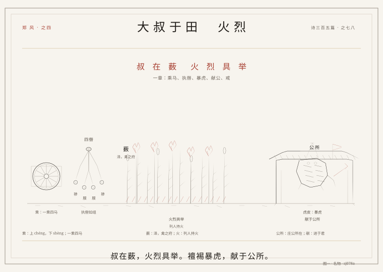
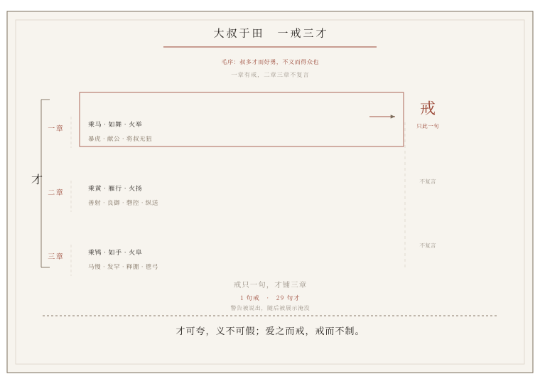

郑风 · 之四 SJ078
诗三判：
《毛序》：“《大叔于田》，刺庄公也。叔多才而好勇，不义而得众也。”
孔疏：“叔负才恃众，必为乱阶，而公不知禁，故刺之。经陈其善射御之等，是多才也；襢裼暴虎，是好勇也；火烈具举，是得众也。”
毛传：“叔之从公田也。”“薮泽，禽之府也。烈，列。具，俱也。”“襢裼，肉袒也。暴虎，空手以搏之。”“狃，习也。”“襄，驾也。上驾者，言为众马之最良也。”“鴈行者，言与中服相次序。”“齐首，马首齐也。”“如手，进止如御者之手。”“阜，盛也。”“慢，迟。罕，希也。”“掤，所以覆矢。鬯弓，弢弓。”
郑笺：“如组者，如织组之为也。在旁曰骖。”“列人持火俱举，言众同心。”“献于公所，进于君也。”“狃，复也。请叔无复者，爱也。”“两服，中央夹辕者。襄，驾也。上驾者，言为众马之最良也。鴈行者，言与中服相次序。”“骋马曰磬，止马曰控，发矢曰纵，从禽曰送。”“如人左右手之相佐助也。”“田事且毕，则其马行迟，发矢希。”“射者盖矢、弢弓，言田事毕。”
朱子《诗集传》：“赋也。叔、亦段也。车衡外两马曰骖。如舞、谓谐和中节。皆言御之善也。薮、泽也。火、焚而射也。烈、炽盛貌。具、俱也。襢裼、肉袒也。暴、空手搏兽也。公、庄公也。狃、习也。国人戒之曰、请叔无习此事。恐其或伤汝也。盖叔多材好勇、而郑人爱之如此。”又引“陆氏曰、首章作大叔于田者误。苏氏曰、二诗皆曰叔于田。故加大以别之。不知者乃以段有大叔之号、而读曰泰、又加大于首章。失之矣。”
《诗本音》：“大叔于田，乘乘马。执辔如组，两骖如舞。叔在薮，火烈具举。襢裼暴虎，献于公所。将叔无狃，戒其伤女。”三章章十句。
本库的看法：《大叔于田》是一首把“多才”写成“孤勇”的诗。 一章十句，把才、众、险、爱四项一次摆齐：执辔如组是才，火烈具举是众，襢裼暴虎是险，将叔无狃是爱。二章不再写虎，只写善射善御；三章不再写戒，只写收弓。“戒”只一句，才却铺满三章。 这不是遗忘，是剪裁：警告被一句带过，展示被三章放大。
毛序说“刺庄公”，刺的正是这一句：爱之而戒，戒而不制。 庄公看见弟弟空手搏虎，只说“当心伤了你”，却不制止他；诗也不制止，继续写他如何善射、如何善御、如何从容收弓。才越真，不义越显；因为才可以把一个人抬到众人之上，义才能把他留在众人之中。
先辨九事：“大叔”是太叔段，“大”读泰，不是“叔叔”；“田”是取禽，不是田地；“乘乘马”上“乘”读 chéng、下“乘”读 shèng；“两服”是夹辕内两马，“两骖”是衡外两马；“薮”是泽，禽之府；“火烈”是火有行列、炽盛，不是“烈火”；“襢裼”是肉袒，“暴虎”是空手搏虎；“将”读 qiāng，请，“狃”是习、复，“女”是汝；“鸨”是骊白杂毛的马，不是鸨鸟。
第一章
大叔于田，乘乘马。
执辔如组，两骖如舞。
叔在薮，火烈具举。
襢裼暴虎，献于公所。
将叔无狃，戒其伤女。
第二章
叔于田，乘乘黄。
两服上襄，两骖雁行。
叔在薮，火烈具扬。
叔善射忌，又良御忌。
抑磬控忌，抑纵送忌。
第三章
叔于田，乘乘鸨。
两服齐首，两骖如手。
叔在薮，火烈具阜。
叔马慢忌，叔发罕忌。
抑释掤忌，抑鬯弓忌。
分章：三章，章十句，共三十句。一章有“暴虎、献、戒”，二章尽写射御，三章写收弓；虎与戒只在一章。
读法：一章八韵到底，像火线一路烧过去；二章前四句阳部，后四句转去声，像马从驰骋转收控；三章前四句上声，后四句散开，像弓入囊。韵的走法，就是猎的走法：举火、驰马、收弓。
大叔：太叔段。“大”读泰，不是“大叔”的“大”。毛传“大叔，大叔段也”；孔疏“由宠而异其号”，京城大叔是国人给他的称呼。不是伯父、叔父，也不是“大叔叔”。
于：往、之。不是“在”。
田：取禽、打猎。毛传“田，取禽也”。不是田地。
乘乘马：上一“乘”读 chéng，驾；下一“乘”读 shèng，一乘四马。毛音“上如字，下绳证反”。“乘乘马”是驾一乘四马，不是“骑了又骑”。
执辔：手执缰绳。辔，马缰。四马各两辔，御者手中总握。
组：织组，用丝线编成的绶带。郑笺“如组者，如织组之为也”。“如组”不是“像组织”，是四根缰绳在手里编得有条理，像织组。
两服：夹辕内两马。郑笺“两服，中央夹辕者”。不是两件衣服，也不是“两匹马”的泛称。
两骖：衡外两马。郑笺“在旁曰骖”。服在内，骖在外；一车四马，两服两骖。
上襄：上驾、最好的驾马。郑笺“襄，驾也。上驾者，言为众马之最良也”。不是“上车”，也不是“上面的车厢”。
雁行：如雁阵，稍次服后。郑笺“与中服相次序”，朱子“驂少次服後，如鴈行也”。不是一字平列。
齐首：两服马头齐。毛传“马首齐也”。
如手：两骖如御者左右手，进止相助。毛传“进止如御者之手”，郑笺“如人左右手之相佐助也”。不是“像手指”。
薮：泽，禽兽聚集之处。毛传“薮泽，禽之府也”。郑笺“此言在薮，盖在圃田也”。不是草堆。
火：火把、火列。郑笺“列人持火俱举”，朱子“火、焚而射也”。两读并存：一为众人持火夜猎，一为焚泽驱禽而射。
烈：列，行列；也训炽盛。毛传“烈，列”，朱子“烈、炽盛貌”。不是“烈火”的烈。
具：俱、都。毛传“具，俱也”。
举、扬、阜：举，起；扬，光上扬；阜，盛。三章火势一层层加盛。
襢裼：肉袒，脱去外衣，露出身体。毛传“襢裼，肉袒也”。不是“脱光”，也不是“赤裸”的泛称。
暴虎：空手搏虎。毛传“暴虎，空手以搏之”；《尔雅》“暴虎，徒搏也”。不是“暴虐老虎”，也不是“打死老虎”。
公所：庄公所在之处。郑笺“献于公所，进于君也”；朱子“公、庄公也”。不是“公共场所”。
将：请。毛传“将，请也”，读 qiāng。不是“将要”。
狃：习、复。毛传“狃，习也”，郑笺“狃，复也”。“无狃”是不要再习惯做这种事，不是“不要骄傲”。
女：汝，你。不是“女人”。
忌、抑：皆语助辞。朱子“忌、抑、皆语助辞”。不是实词。
磬控：磬，骋马；控，止马。毛传“骋马曰磬，止马曰控”。
纵送：纵，发矢；送，从禽、逐后。毛传“发矢曰纵，从禽曰送”；朱子“舍拔曰纵，覆彇曰送”。
慢：迟。毛传“慢，迟也”。不是傲慢。
罕：稀。毛传“罕，希也”。不是罕见。
掤：矢筒盖。毛传“掤，所以覆矢”。不是箭。
鬯弓：弓囊；鬯弓即弢弓、把弓装进弓囊。毛传“鬯弓，弢弓”。不是弓名，也不是香酒。
鸨：骊白杂毛的马，即乌骢。毛传“骊白杂毛曰鸨”；《诗本音》作“駂”，并注“今本多误作鴇”。不是鸨鸟。
第一章
太叔去打猎，驾着一乘四马。手执缰绳像织组，外侧两马舞一样合节。叔在泽薮，火把成列齐举。脱去外衣空手搏虎，献到庄公所在。请叔不要再习惯这种事，当心伤了你。
第二章
叔去打猎，驾四匹黄马。内侧两服是最好的上驾，外侧两骖如雁阵稍后。叔在泽薮，火把光焰上扬。叔善射，又善御；能骋马，能止马；能发矢，能逐禽。
第三章
叔去打猎，驾四匹乌骢。两服马头齐，两骖如左右手。叔在泽薮，火把盛极。叔的马慢了，叔的箭稀了；解开箭筒盖，把弓装进弓囊。
一章：十句，一句一事，从“乘马”到“执辔”，从“两骖”到“薮”，从“火”到“暴虎”，从“献”到“戒”。一章是全篇的缩影：才、众、险、爱，四项都摆齐。“如舞”写御，“火举”写众，“暴虎”写勇，“戒”写爱。“戒”放在一章末尾，是警告，也是分水岭。
二章：不再写虎，只写射御。“上襄”“雁行”写马，“善射”“良御”写才，“磬控”“纵送”写控制。一章的火是“举”，二章的火是“扬”；火更盛，才更显。 这是“多才”的正面展开。
三章：写收。“齐首”“如手”写整齐，“火阜”写极盛，“马慢”“发罕”“释掤”“鬯弓”写收束。朱子说“言其田事将毕，而从容整暇如此”。全篇从“举”到“收”，从“暴”到“藏”，只有最后四句才慢下来。
总说：一章有“戒”，二章三章不再提。戒只一句，才铺三章。 这不是重复，是结构：警告被说出，随后被展示淹没。诗的“刺”不在字面，在篇幅——三十句里，只有一句把“戒”说出来，其余二十九句都在写才、众、险、献；才长，戒短。“将叔无狃”之后，诗没有停，猎也没有停；这就是“不制”。
一句收：才可夸，义不可假；爱之而戒，戒而不制。
双卡十八对：
| 正 | 误 |
|---|---|
| 大叔（太叔段，读泰） | 大叔（伯父、叔父） |
| 田（取禽、打猎） | 田（田地、种田） |
| 乘乘马（上 chéng，下 shèng） | 乘乘马（两乘都读 chéng） |
| 两服（夹辕内两马） | 两服（两件衣服） |
| 两骖（衡外两马） | 两骖（两匹马泛称） |
| 上襄（上驾、良马） | 上襄（上车、上面的车厢） |
| 雁行（稍次服后，如雁阵） | 雁行（一字平列、大雁排队） |
| 如手（如左右手佐助） | 如手（像手指） |
| 薮（泽，禽之府） | 薮（草堆、草泽泛称） |
| 火烈（火有行列/炽盛） | 火烈（烈火、火很猛） |
| 襢裼（肉袒，去外衣） | 襢裼（脱光、赤裸） |
| 暴虎（空手搏虎） | 暴虎（暴虐老虎、打死老虎） |
| 公所（庄公所在） | 公所（公共场所） |
| 将（请，读 qiāng） | 将（将要） |
| 狃（习、复） | 狃（骄傲、自满） |
| 女（汝，你） | 女（女人） |
| 鸨（骊白杂毛马，诗本音作駂） | 鸨（鸨鸟） |
| 掤／鬯弓（矢筒盖／弓囊） | 掤／鬯弓（箭／弓名、香酒） |


读图三处：